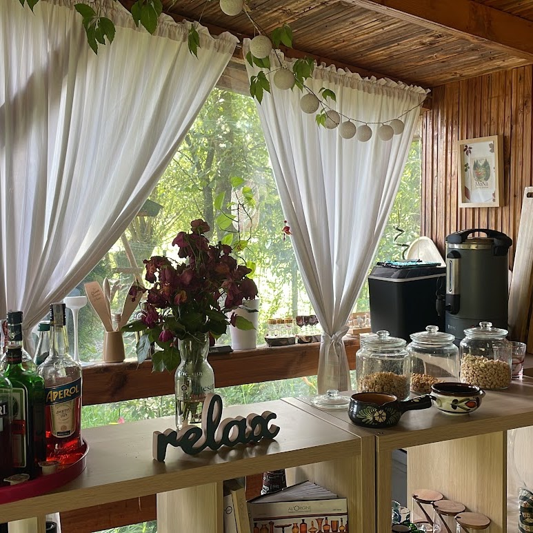
01
O cafea bună, ceva dulce
Servite la masă de lemn, în mijlocul verdelui.
Bine ai venit la noi
Grădina Timpului este un loc făcut pentru tihnă și reconectare cu natura. O grădină de familie, în care să respiri adânc, să-ți lași pașii să încetinească și să te bucuri de timpul petrecut afară.
Aici nu vii să bifezi obiective. Vii să te bucuri de verde, de aer curat și de momentele simple, alături de cei dragi.
Vezi ce poți trăi aici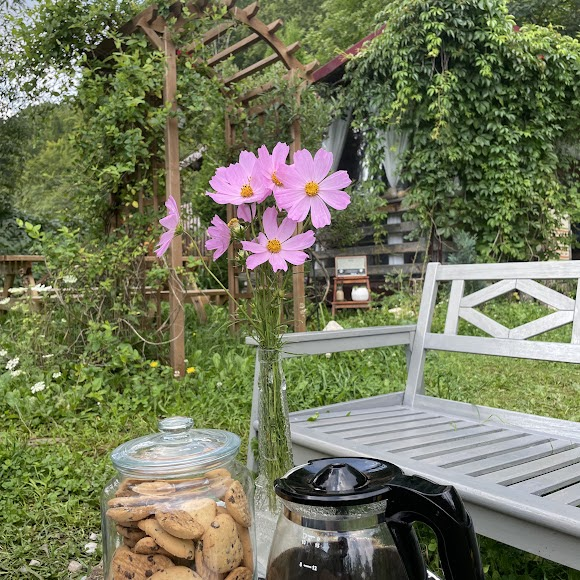
un colț de liniște, în mijlocul naturiiPauza ta în natură
Grădina Timpului s-a născut din dorința unei familii de a crea un spațiu simplu, natural și liniștit, unde oamenii pot fugi de agitația zilnică și se pot reconecta cu natura, cu ei înșiși și cu cei dragi.
Nu suntem un resort, nu suntem un parc, nu suntem o destinație turistică aglomerată. Suntem o grădină. Un refugiu. Un loc de tihnă.
Vezi ce poți trăi aici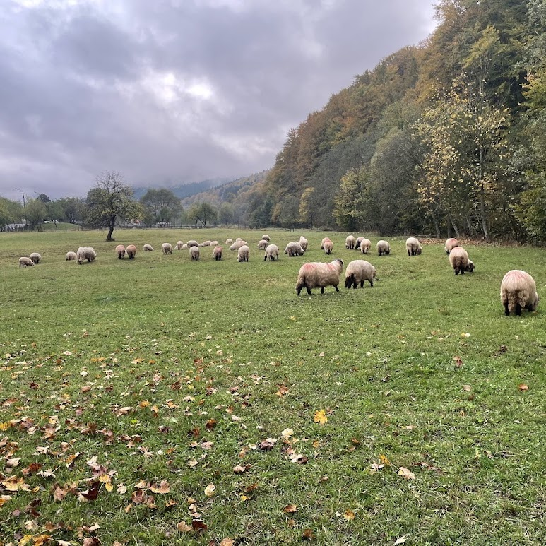
în satul Buzaiel, Vama BuzăuluiAici nu te grăbește nimeni
Un loc unde să te relaxezi, să calci desculț pe iarbă și să te bucuri de lucrurile simple.

Servite la masă de lemn, în mijlocul verdelui.
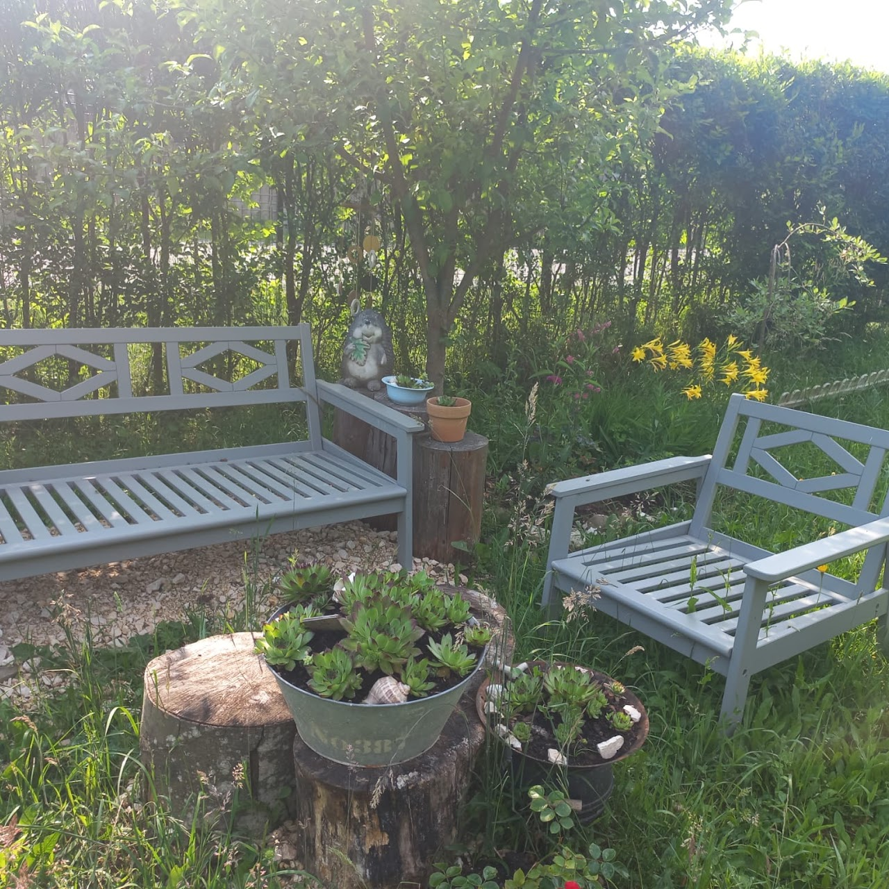
Scaune în soare, flori și liniște deplină.
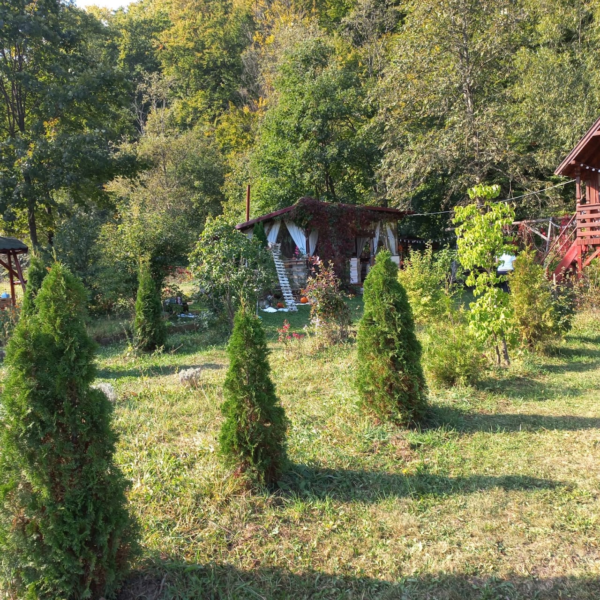
Iarbă moale și flori sălbatice sub tălpi.
Oile la pășunat dau ritmul zilei.
Din bucătăria grădinii
De la grătar la ceaun — gusturi simple, de casă, gătite în aer liber.
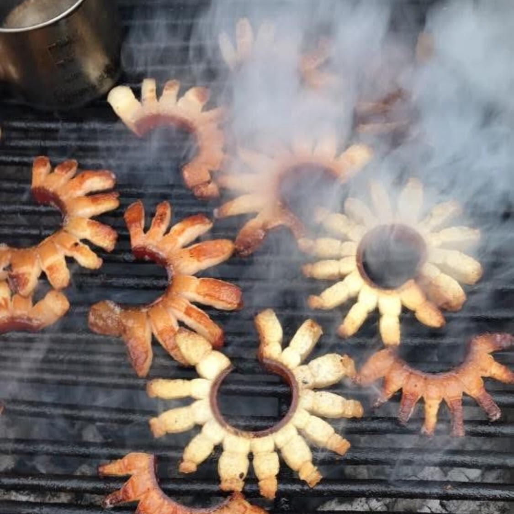
Slănină și carne frăgezite pe jar.
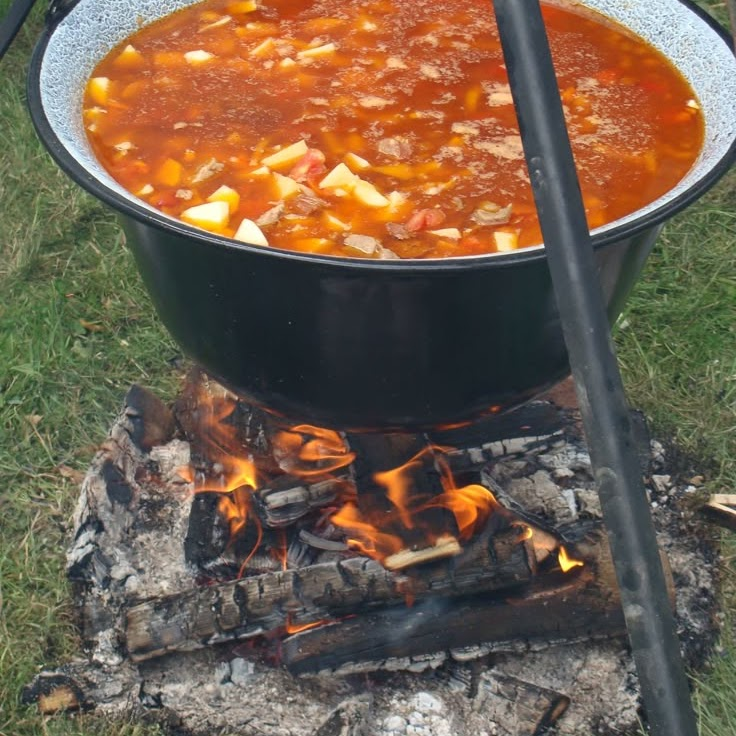
Gusturi simple, gătite la flacără.
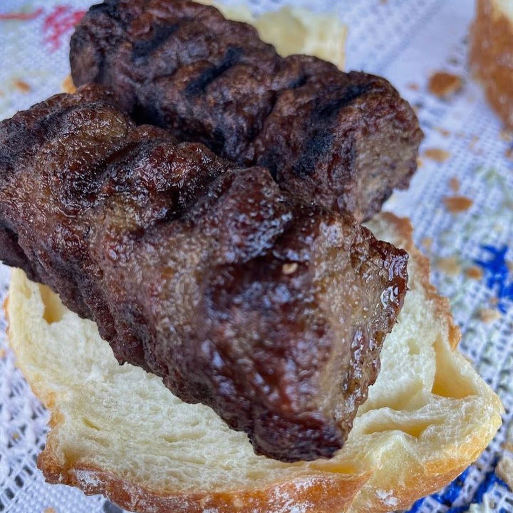
Proaspeți, direct de pe grătar.
Dimineți lente, cu miros de cafea.
Cu toate simțurile
Campare cu cortul, foc de tabără, cinema sub stele, observarea Perseidelor, aleea terapeutică.
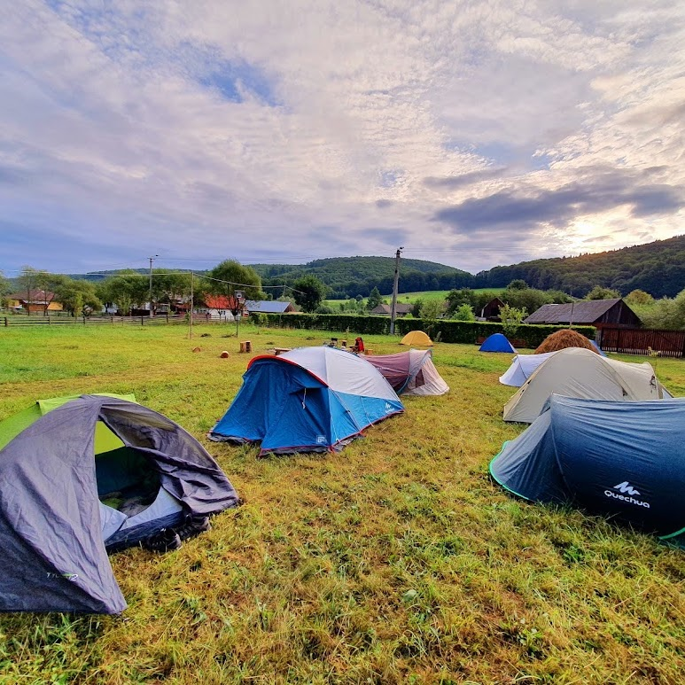
Corturi în curtea grădinii, sub cerul liber.
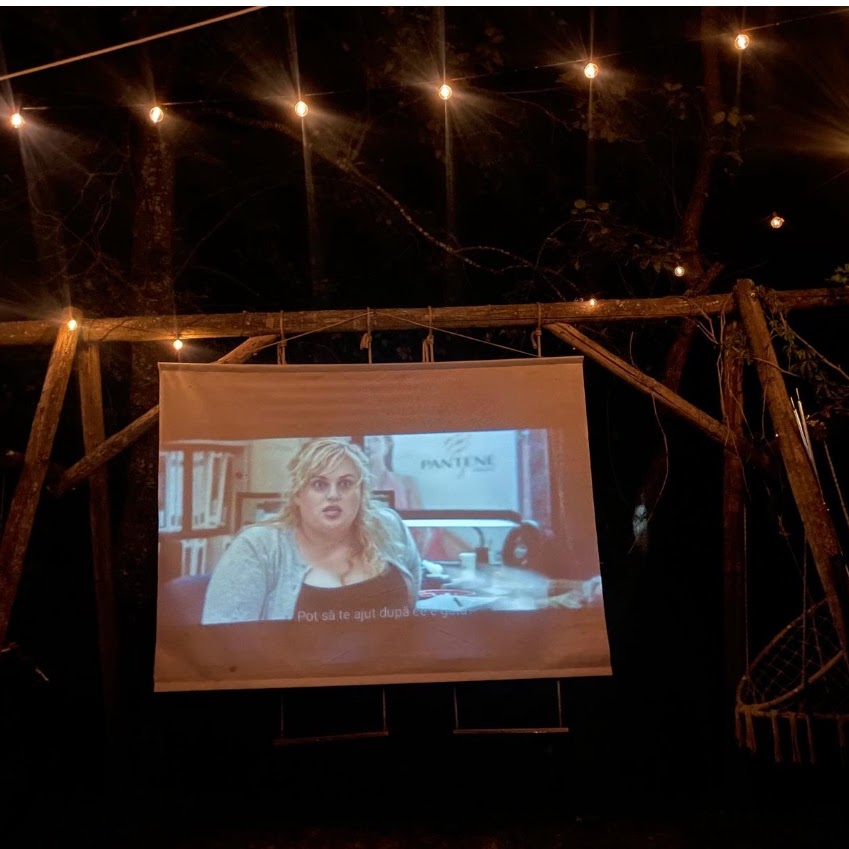
Calea Lactee, deasupra grădinii.
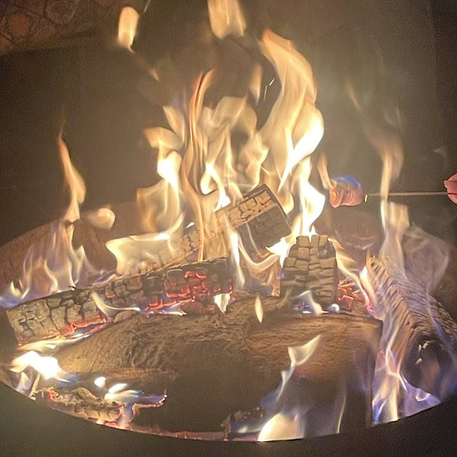
Povești și căldură, în jurul focului.

Pietre de râu, pietriș și conuri — de parcurs desculț.
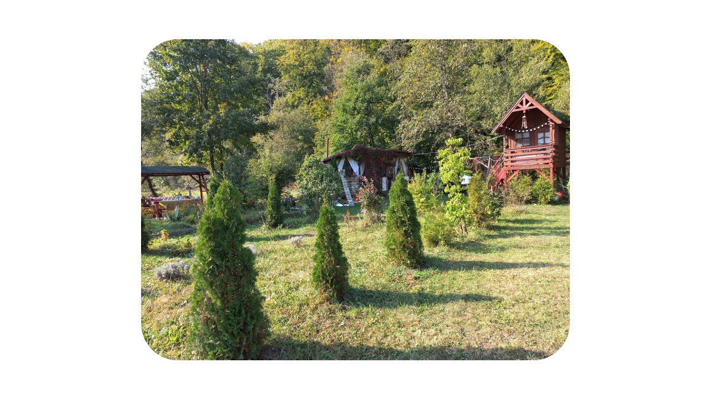
terasa unde timpul curge mai încetPentru cine este Grădina Timpului?
Gânduri din grădină
Cuvintele oaspeților noștri spun mai mult decât am putea noi.
„Moni, când o să fiu mare, mi-ar plăcea să am și eu o grădină-cafenea ca a ta.”
— prieten al copilului nostru
„Un loc în care chiar simți că timpul încetinește.”
— Loredana, Brașov
„Ne-am oprit pentru o cafea și am rămas mai mult decât plănuisem.”
— Alex, Brașov
Te așteptăm
Lasă graba deoparte și vino să petreci câteva ore în tihnă, în Buzaiel.
Planifică o vizită